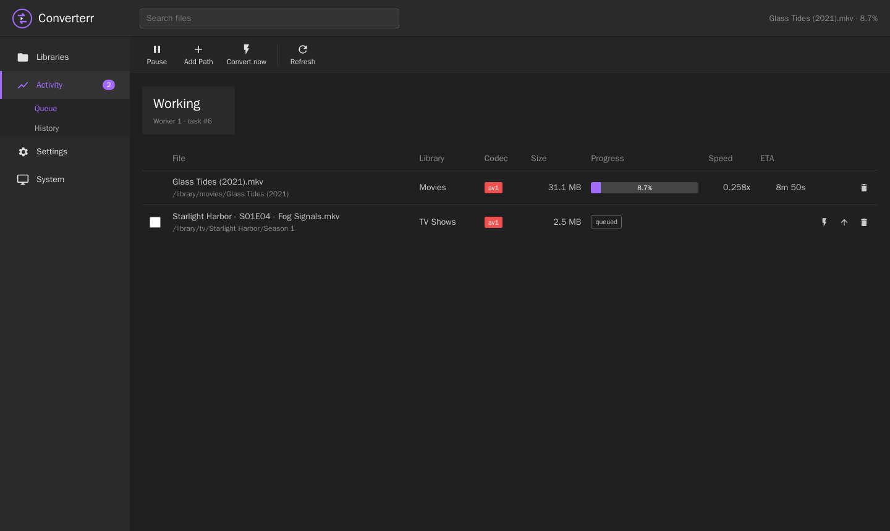
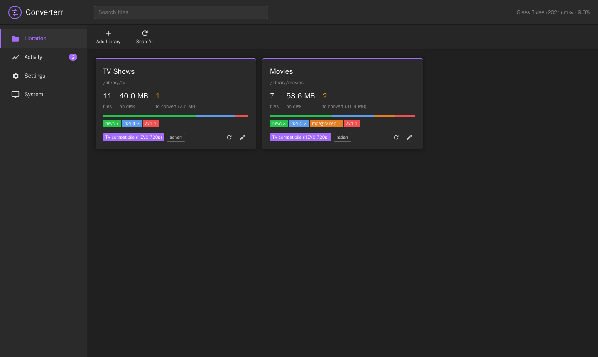
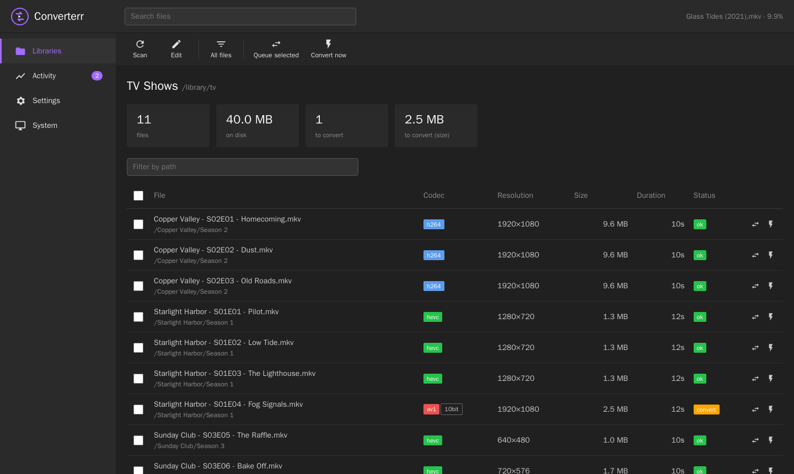
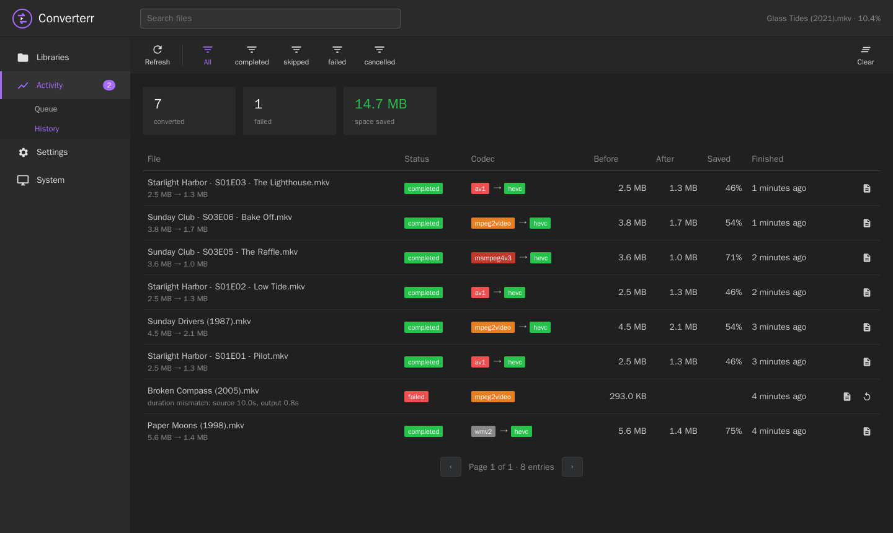
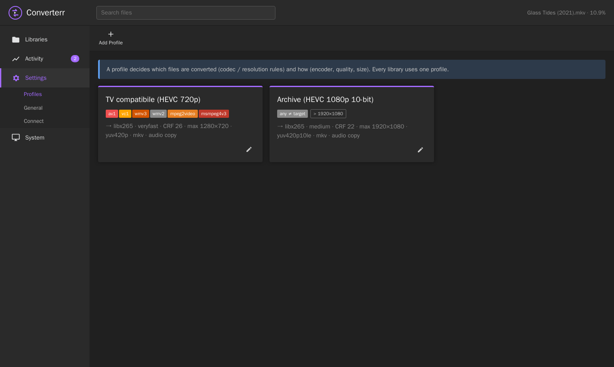
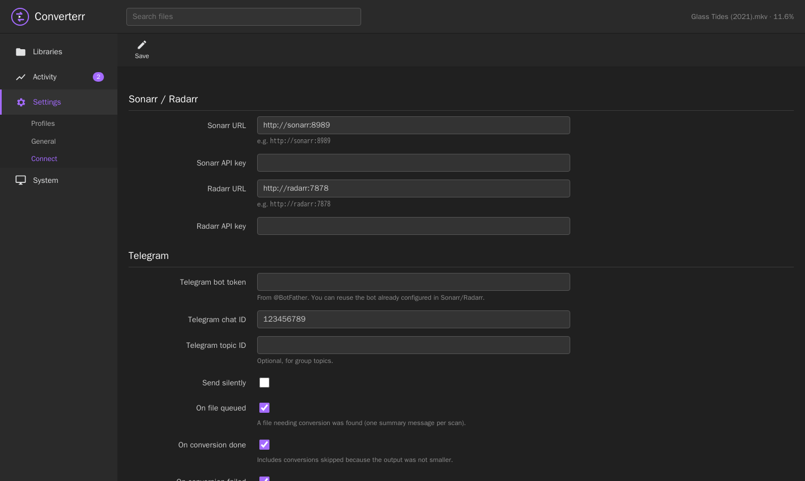

Finds the videos your TV can't play and converts them in place.
A Sonarr/Radarr-style transcoder for your media library: one small Rust binary, 100% open source.

Your TV plays HEVC and H.264 fine, but stutters on AV1, VC-1, MPEG-2 or old DivX, and a small server can't transcode those on the fly. Converterr fixes those files once and leaves everything else alone.
A profile lists the source codecs to convert (e.g. av1,vc1,mpeg2video) and optionally a maximum resolution. Files already in a good format are never touched.
ffmpeg writes to a cache folder. The original is replaced only after the output is checked with ffprobe and matches the source duration. Optionally the original is kept if the result isn't smaller.
A webhook converts new imports right away. When a conversion finishes, Converterr asks Sonarr/Radarr to rescan the series or movie. Path mapping works per library.
Encode only during off-peak hours. Outside the window, running encodes are suspended, not killed, so a long movie can be finished over several nights.
Need a file today? Select one or more files and hit Convert now. They start right away on a dedicated worker, ignoring the window and the queue.
Same look as Sonarr/Radarr's Telegram messages: files queued (one summary per scan), conversions done (with the space saved), failures.
The Docker image ships Debian's ffmpeg, whose x265 has NEON assembly on arm64: about 3.5× faster than "noasm" builds (0.21× vs 0.06× realtime for 1080p AV1 → 720p HEVC on a Pi 4).
When an HDR source is encoded to 8-bit, Converterr tone-maps it to SDR automatically, so colours don't come out washed out.
A single Rust binary with an embedded web UI and a SQLite database. Scans are incremental (probe results are cached by size and mtime). REST API with X-Api-Key, like the *arr apps.
The UI follows the *arr family: sidebar, icon toolbar, dark theme.





Docker is the easiest way. The image is multi-arch (amd64 and arm64).
services:
converterr:
image: ghcr.io/teopost/converterr:latest
container_name: converterr
user: "1000:1000" # owner of your media files
environment:
- TZ=Europe/Rome # the time window uses this timezone
volumes:
- ./config:/config # database
- ./cache:/cache # ffmpeg scratch space (room for one output per worker)
- /mnt/media/tv:/library/tv
- /mnt/media/movies:/library/movies
ports:
- 8787:8787
cpus: "3.0" # leave a core for your media server
restart: unless-stoppedOpen http://<host>:8787, then:
git clone https://github.com/teopost/converterr
cd converterr
docker build -t converterr . # or: cargo build --release (needs ffmpeg/ffprobe in PATH)Two links, one in each direction.
In Sonarr or Radarr go to Settings → Connect → + → Webhook, enable On Import and On Upgrade, method POST, and use the URL shown on Converterr's Settings → Connect page:
http://converterr:8787/api/v1/webhook?apikey=<your api key>Converterr probes the imported file and queues it only if the library's profile says so. A daily scan (optional) catches anything the webhook missed.
Fill in the Sonarr/Radarr URL and API key on Settings → Connect and set Notify on each library. After a conversion, Converterr finds the series or movie that owns the file and triggers a rescan, so the *arr app picks up the new codec, size and extension.
Containers often mount the same folder at different paths. Set the library's Sonarr/Radarr path to the folder as Sonarr/Radarr sees it:
| Converterr library path | Sonarr/Radarr path | Example file |
|---|---|---|
/library/tv | /tv | /tv/Show/Season 1/Show - S01E01.mkv |
/library/movies | /movies | /movies/Film (2020)/Film (2020).mkv |
| Setting | Meaning |
|---|---|
| Convert these codecs | Comma separated ffprobe codec names. Common ones: av1, vc1, wmv3, wmv2, mpeg2video, msmpeg4v3 (DivX 3), mpeg4 (Xvid/DivX). Empty = convert every file whose codec differs from the target. |
| Convert oversized files | Also convert files larger than the max width × height, whatever their codec. |
| Max width / height | Downscale to fit, keeping the aspect ratio. Smaller files are never upscaled. 0 = no limit. |
| Encoder, preset, CRF | libx265, libx264 or libsvtav1. Lower CRF = better quality and bigger files. |
| Pixel format | 8-bit (yuv420p) for maximum compatibility, 10-bit, or keep the source. 8-bit output from HDR sources is tone-mapped. |
| Container / audio | MKV keeps every audio, subtitle and attachment stream; MP4 drops subtitles. Audio can be copied or re-encoded to AAC/AC3. |
| Keep original if not smaller | Discard the output when it isn't smaller than the source. |
| Extra ffmpeg arguments | Appended before the output file, e.g. -threads 3. |
On Settings → Connect enter a bot token (from @BotFather) and your chat id. You can reuse the bot you already use for Sonarr/Radarr. Each event can be switched on or off:
| Event | Message |
|---|---|
| File(s) queued | File name, codec, resolution, size and reason. A scan sends one summary message instead of one message per file. |
| Conversion done | Codec and resolution before → after, size before → after and the percentage saved. |
| Conversion failed | File name and the error. |
| Variable | Default | Meaning |
|---|---|---|
CONVERTERR_DATA | /config | Folder holding converterr.db |
CONVERTERR_PORT | 8787 | HTTP port |
CONVERTERR_BIND | 0.0.0.0 | Bind address |
TZ | UTC | Timezone used by the time window |
RUST_LOG | info | Log level |
Everything else is set in the web UI: workers, time window, scan interval, cache folder, API key, optional UI password (HTTP Basic), Sonarr/Radarr and Telegram.
/cache/task-<id>/ and checked with ffprobe: it must be readable and match the source duration..avi → .mkv) the original is deleted. An existing file with the target name is never overwritten.Is it related to Unmanic? It was inspired by it, but Converterr is a separate project written from scratch in Rust. Every feature is free and there are no accounts.
Hardware encoding? Not built in yet. You can pass encoder options through Extra ffmpeg arguments, but software x265 is the safe default. Some ARM v4l2 encoders are unstable.
Will it re-convert a file it already converted? No. After a conversion the file is HEVC, so the profile rules no longer match it. Failed, skipped and cancelled files are not re-queued automatically. Use Retry in History.
All endpoints live under /api/v1 and require the API key, sent as the X-Api-Key header or as ?apikey=.
| Method | Path | Description |
|---|---|---|
| GET | /system/status | Version, ffmpeg version, statistics |
| GET / PUT | /settings | Read or replace the settings |
| GET POST / PUT DELETE | /profile, /profile/{id} | Profiles |
| GET POST / PUT DELETE | /library, /library/{id} | Libraries (with statistics) |
| POST | /library/scan, /library/{id}/scan | Start a scan |
| GET | /library/{id}/files?toConvert=true&search=&page= | Probed files |
| GET | /queue | Queued and running tasks |
| POST | /queue | {"paths": ["..."], "force": true}: queue files or folders, optionally converting now |
| POST | /queue/force | {"ids": [1, 2]}: convert queued tasks now |
| POST / DELETE | /queue/{id}/top, /queue/{id} | Move to top, cancel/remove |
| GET / DELETE | /history?status=&page= | History, clear history |
| POST | /history/{id}/retry | Queue a finished task again |
| GET | /task/{id}/log | ffmpeg command line and output |
| GET / POST | /workers, /workers/pause, /workers/resume | Worker state, pause switch |
| POST | /webhook | Sonarr/Radarr webhook receiver |
| POST | /test/arr, /test/telegram | Connection tests |